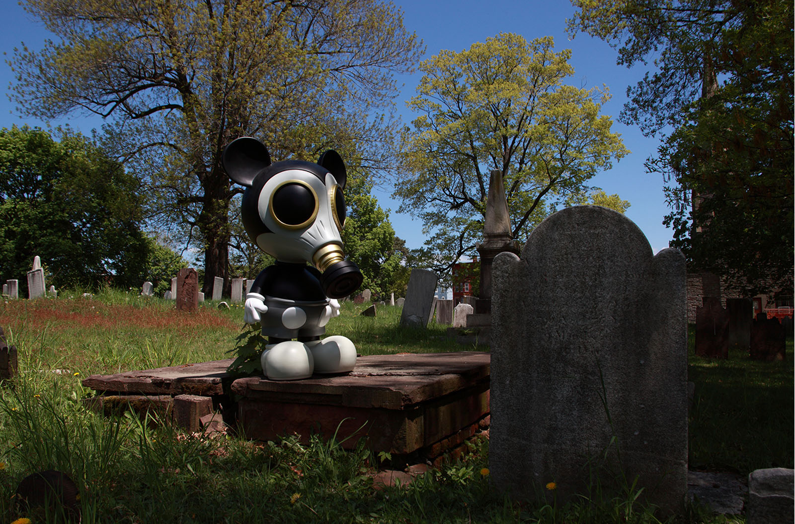

Exhibitions
Seasons in Suburbia, Corey Helford Gallery, Culver City (Los Angeles), California, US, November 19–December 10, 2011.
Literature
Ron English, Fauxlosophy: The Art of Ron English (San Francisco: Last Gasp, 2008), p. 22. ISBN 978-0867196566.
Ron English, Death and the Eternal Forever (Korero Press, 2014), p. 133. ISBN 978-0957664920.
Ron English, Original Grin: The Art of Ron English (Paris: Cernunnos, 2019), p. 329. ISBN 978-2374950938.
Ron English, Status Factory: The Art of Ron English (San Francisco: Last Gasp of San Francisco, 2014), p. 151. ISBN 978-0867197891.
Notes
The work is documented on Corey Helford Gallery’s exhibition object page for RON ENGLISH Seasons In Supurbia, accessed April 8, 2026.
